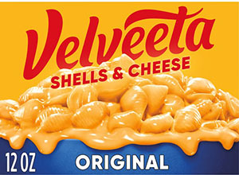
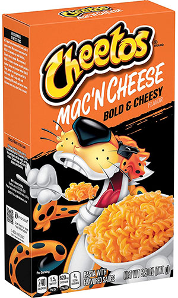

| Description | Rating | Description | Approximate Cost | |
|---|---|---|---|---|
|
Kraft Deluxe White Cheddar & Cracked Black Peppercorn | 10/10 | This is how you update a classic. kraft delxe brings the signature cheesy, salty, slightly sweet kraft flavor and amplifies it to S-teir mac and cheese. its sharp, peppery, creamy, and downright sublime. sporked social media manager mark catangui commented,"wow, its so gooey, but that mjight be because it was prepped well." youre damn right, mark. i cooked every mac and cheese on this list, and made sure every single one was served up hot and creamy. even as i made this kraft deluxe in the pot, i could tell it was special. | $3.79 |
 |
Velveeta Shells & Cheese | 10/10 | simply put, velveeta shells and cheese is so good that the brand is synonymous with mac and cheese. personally, its my favorite. as previously stated, velveeta adheres to the italian principles of pasta very well. it is creamy, smooth, buttery, delicious, and somehow every molecule of shell drenched in thick, delicious cheese goo. in this way its like a cacio e pepe. the texture of velveeta shells and cheese is very much like the mac and cheese i made from scratch. sure, its overly processed cheese goo, but its americas overly processed cheese goo. and you cant debate the gloriously smooth velvety texture. nothing comforts like velveeta shells and cheese. | $3.59 |
 |
Cheetos Bold and Cheesy Mac N cheese | 9.5/10 | Cheetos has absolutely nailed it with their new mac and cheese. its salty, cheesy, and dense with cheetos flavor, just like their snakcs. the packet of cheese dust that comes with this box is absolute gold. this mac is the perfect mash-up of junk food and comfort food. like all of these mac and cheeses, if you want more flavor in your bowl, you can adjust the cooking ratios accordingly. personally, i leave a tablespoon or two fo pasta out of the package to get a higher ratio of dust-to-pasta. cheetos bold and cheesy carries intense flavor. This is a big win for humanity. | $1.59 |